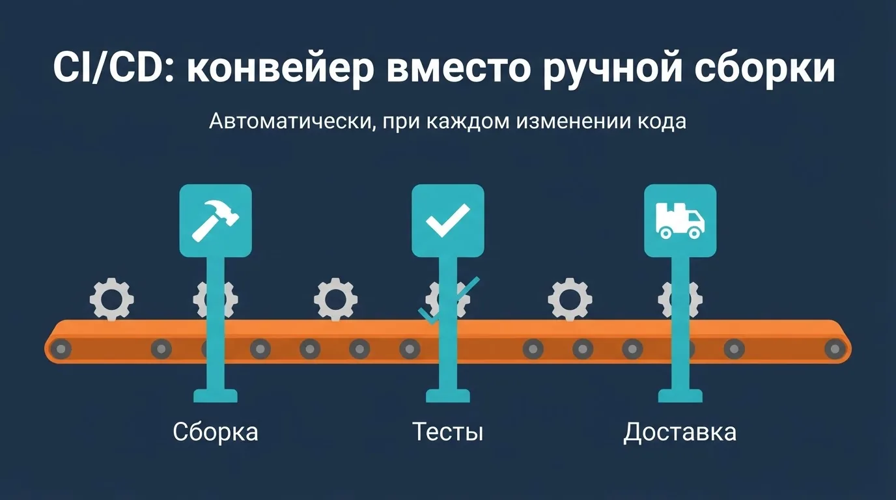
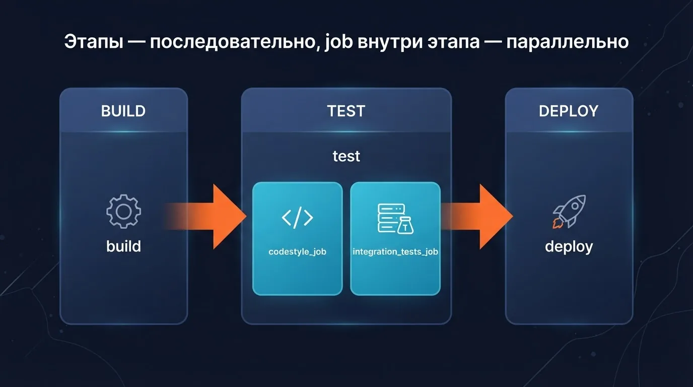
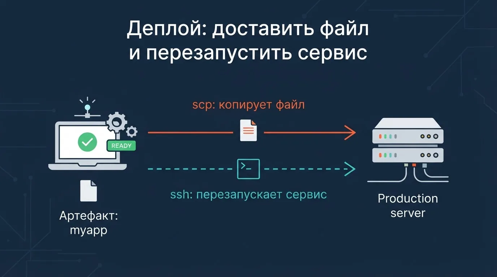
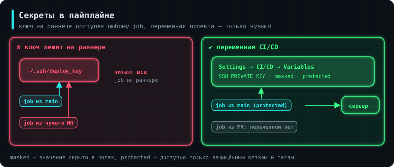
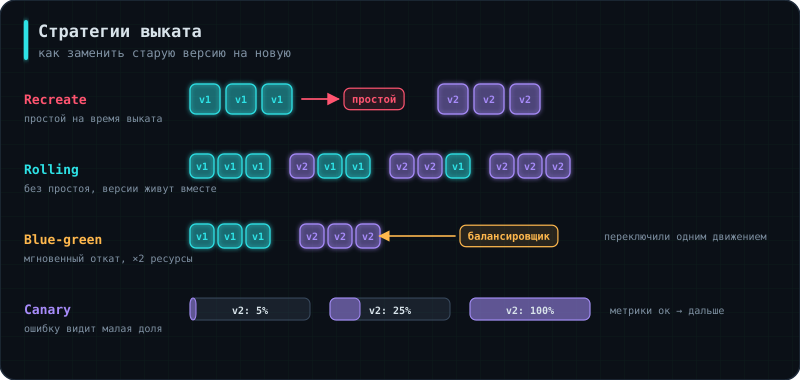

Задание 1 — свой раннер
Поставь GitLab Runner на виртуалку и зарегистрируй его с Docker executor для своего проекта.
Проверка: в настройках проекта раннер зелёный, задачи выполняются на нём (видно в логе задачи).
Если что-то делается вручную каждый раз перед релизом — рано или поздно об этом забудут, сделают не в том порядке или просто устанут это делать. CI/CD — не про «модную технологию», а про то, чтобы сборка, тесты и доставка кода происходили одинаково надёжно каждый раз, без участия человека там, где он не нужен.
Аналогия: CI/CD — как конвейер на заводе вместо ручной сборки на коленке: каждая деталь проходит одни и те же проверки в одном и том же порядке, независимо от того, кто и когда её туда положил.
Причины внедрять CI/CD:
Pipeline — это последовательность действий (описанных скриптом), которая запускается автоматически при изменении кода в репозитории — то есть ровно то же самое, что человек делал бы руками при релизе, но без человека и без права на «забыл».

Аналогия: CI — это ОТК (отдел технического контроля) на заводе, который проверяет каждую деталь сразу после изготовления, а не ждёт, пока готовое изделие соберут целиком и выяснится, что одна деталь была бракованной с самого начала.
CI обычно решает две задачи:
Если любой из этих шагов проваливается — pipeline должен «упасть» (зафейлиться) целиком, чтобы сломанный код физически не мог продвинуться дальше по цепочке.
Аналогия: если CI — это ОТК на заводе, то CD — это логистика, которая после проверки везёт готовую партию сначала на склад (staging), а потом, по отдельному решению, в магазины (production).
CD может включать:
master, release).Аналогия: GitLab — это диспетчер, который говорит «нужно сделать вот это», а runner — конкретный рабочий на конкретной машине, который реально берёт инструмент и делает работу.
# на отдельной машине (или VM):
curl -L "https://packages.gitlab.com/install/repositories/runner/gitlab-runner/script.deb.sh" | sudo bash
sudo apt-get install gitlab-runner
gitlab-runner register
# понадобятся: URL проекта и токен регистрации со страницы настроек CI/CD в GitLab
После регистрации runner подключается к конкретному проекту (или группе проектов) и начинает опрашивать GitLab: «есть для меня задачи?» — как только в репозитории происходит изменение, GitLab передаёт runner'у шаги pipeline на выполнение.
Аналогия: .gitlab-ci.yml — это письменная инструкция для конвейера: какие станции (stages) есть, что делает каждая станция, и в каком порядке деталь проходит через них.
stages:
- build
- test
- deploy
build_job:
stage: build
image: python:3.13-slim
script:
- pip install build
- python -m build # собрать пакет приложения в dist/
artifacts:
paths:
- dist/
expire_in: 30 days
stages задаёт порядок этапов верхнего уровня. Каждая «работа» (job, здесь build_job) привязана к конкретному этапу через stage: и содержит список команд в script:. Работы одного этапа выполняются параллельно, а этапы между собой — строго последовательно: следующий этап не начнётся, пока не завершится (успешно) предыдущий.

Интерактивная схема загружается…
Аналогия: артефакт — это деталь, прошедшая одну станцию конвейера и переданная дальше на следующую, а не выброшенная сразу после использования.
artifacts:
paths:
- dist/
expire_in: 30 days
Файлы, собранные на этапе build (например, пакет приложения в dist/ или скомпилированный бинарник), автоматически становятся доступны на последующих этапах (test, deploy) того же pipeline благодаря artifacts. expire_in задаёт, сколько времени GitLab будет их хранить, прежде чем удалить автоматически.
Аналогия: проверка кодстайла — как проверка орфографии перед отправкой важного письма: сама по себе не гарантирует, что содержание письма верно, но отлавливает целый класс мелких, но раздражающих ошибок автоматически.
codestyle_job:
stage: test
image: python:3.13-slim
script:
- pip install ruff
- ruff check .
- ruff format --check .
ruff format --check в этом режиме не переписывает файлы, а завершается с ошибкой, если находит несоответствие стилю, и именно эта ошибка «роняет» весь job (а значит, и pipeline), не давая проекту с плохим кодстайлом продвинуться к следующим этапам. ruff check ловит не стиль, а подозрительный код: неиспользуемые импорты, необъявленные переменные (2.4 Архитектура и тесты, §11). Для других языков то же самое делают свои инструменты: shellcheck для bash, hadolint для Dockerfile, clang-format для C, gofmt для Go — меняется только команда, смысл этапа тот же.
Аналогия: интеграционные тесты запускаются только если сборка и кодстайл уже прошли — нет смысла тестировать поведение программы, которая даже не собралась.
Модульные тесты проверяют логику без базы (2.4 Архитектура и тесты, §8). Интеграционные — что приложение действительно работает с настоящим PostgreSQL. Базу для них GitLab поднимает сам, рядом с job:
integration_tests_job:
stage: test
image: python:3.13-slim
needs: ["build_job", "codestyle_job"]
services:
- name: postgres:17
alias: db
variables:
POSTGRES_DB: shop
POSTGRES_USER: shop
POSTGRES_PASSWORD: test
DATABASE_URL: postgresql://shop:test@db:5432/shop
script:
- pip install -r requirements.txt pytest
- pytest tests/integration --junitxml=report.xml
artifacts:
reports:
junit: report.xml
services запускает дополнительный контейнер на время job — здесь PostgreSQL, доступный по имени db. Пароль test живёт только внутри временной базы и исчезает вместе с ней, поэтому его можно держать в файле. artifacts:reports:junit отдаёт GitLab отчёт о тестах, и в merge request видно, какие именно тесты упали.
needs явно указывает, какие job должны успешно завершиться, прежде чем стартует текущая — это позволяет выстроить зависимость между конкретными job, а не просто между этапами целиком. Если хотя бы одна из зависимостей провалилась, зависящий job вообще не запустится.
Аналогия: деплой — это финальная доставка курьером: взять готовый (уже проверенный) пакет и физически отвезти его по адресу получателя.
#!/bin/bash
set -euo pipefail
ssh -i ~/.ssh/deploy_key deploy@production-server \
"cd /opt/shop && docker compose pull && docker compose up -d"
deploy_job:
stage: deploy
when: manual
script:
- ./deploy.sh
ssh выполняет команду на удалённом сервере: скачать новую версию образа и пересоздать контейнеры, у которых изменился образ. Аутентификация — по SSH-ключу, без пароля. Для программ, которые поставляются не образом, а файлом, вместо этого копируют сам файл через scp и перезапускают systemd-сервис — механизм тот же. when: manual — деплой на боевое окружение обычно требует явного нажатия кнопки человеком в интерфейсе GitLab, а не срабатывает автоматически.

Аналогия: уведомление — это как автоматический звонок из химчистки «ваш заказ готов», вместо того чтобы самому периодически туда звонить и спрашивать.
curl -s -X POST "https://api.telegram.org/bot<TOKEN>/sendMessage" \
-d chat_id="<CHAT_ID>" \
-d text="Pipeline завершён: CI — успешно, CD — успешно"
notify_job:
stage: .post
script:
- ./notify.sh "$CI_JOB_STATUS"
when: always
when: always — job уведомления должен запускаться независимо от того, упали предыдущие этапы или нет, иначе о провале pipeline никто не узнает автоматически. Telegram Bot API принимает обычный HTTP POST-запрос — не нужен никакой специальный SDK, чтобы отправить сообщение от имени бота.

В §9 SSH-ключ берётся из ~/.ssh/deploy_key на самом раннере. Это работает, но небезопасно: ключ доступен любому job, который на этом раннере выполняется, включая job из чужого merge request.
Правильный способ — переменные CI/CD в настройках проекта, а не в репозитории:
deploy_job:
stage: deploy
script:
- install -m 600 -D /dev/stdin ~/.ssh/id_ed25519 <<< "$SSH_PRIVATE_KEY"
- ssh-keyscan "$DEPLOY_HOST" >> ~/.ssh/known_hosts
- ssh "$DEPLOY_USER@$DEPLOY_HOST" "cd /opt/shop && docker compose pull && docker compose up -d"
Две настройки у каждой переменной решают почти всё:
echo или подробный вывод команды публикует секрет всем, у кого есть доступ к пайплайну.echo $DEPLOY_KEY и получить ключ от прода..gitlab-ci.yml — он навсегда останется в истории git (0.1 Git, §5).И общее правило: секрет, попавший в лог или в историю, считается скомпрометированным. Его меняют, а не удаляют запись.
Принцип наименьших прав. Ключ деплоя должен уметь ровно одно: положить файл и перезапустить один сервис. Не быть root, не иметь доступа к другим машинам, не открывать интерактивную оболочку. Ограничить можно прямо в authorized_keys на целевой машине через command= — тогда даже украденный ключ позволит выполнить только заранее заданную команду.
Для серьёзных систем секреты держат во внешнем хранилище — HashiCorp Vault или облачном аналоге, где они выдаются на время и с журналом обращений (6.2 DevSecOps).
Аналогия: артефакт — готовая деталь, которую передают на следующую станцию конвейера. Кеш — ящик с инструментами, который стоит у станка и переиспользуется в следующей смене.
Их постоянно путают, а назначение у них разное.
build_job:
stage: build
cache: # ускоряет, но не влияет на результат
key:
files:
- requirements.txt # ключ меняется только при смене зависимостей
paths:
- .venv/
artifacts: # результат работы, нужен следующим этапам
paths:
- dist/
expire_in: 1 week
Артефакты — результат работы job, который обязан попасть в следующие этапы: собранный бинарник, отчёт о тестах, файл покрытия. Они гарантированно передаются дальше и хранятся заданное время.
Кеш — оптимизация: скачанные зависимости, каталог node_modules, .venv. Пайплайн обязан корректно отработать и с пустым кешем, просто медленнее. Опираться на кеш как на источник данных нельзя — он может быть очищен в любой момент.
Ключ кеша стоит привязывать к файлу зависимостей: тогда он переиспользуется, пока список библиотек не изменился, и автоматически обновляется при изменении.
Отдельно — отчёты: GitLab умеет разбирать результаты тестов и показывать их прямо в merge request, если указать формат:
artifacts:
reports:
junit: report.xml
Аналогия: не каждая деталь проходит все станции конвейера. Пробный образец не отправляют в магазин, а серийную партию не разбирают на части для анализа.
Запускать все job на каждый коммит расточительно и часто неверно: деплой в прод не должен срабатывать от коммита в ветку разработчика.
deploy_prod:
stage: deploy
rules:
- if: '$CI_COMMIT_TAG =~ /^v\d+\.\d+\.\d+$/'
when: manual # только по тегу вида v1.2.3, и то вручную
- when: never # во всех остальных случаях не запускать
deploy_staging:
stage: deploy
rules:
- if: '$CI_COMMIT_BRANCH == $CI_DEFAULT_BRANCH'
when: on_success # автоматически при слиянии в main
test_job:
stage: test
rules:
- if: '$CI_PIPELINE_SOURCE == "merge_request_event"'
- if: '$CI_COMMIT_BRANCH == $CI_DEFAULT_BRANCH'
Здесь видно, как события Git из 0.1 Git, §17 превращаются в конкретные правила: push в ветку, открытый merge request, слияние в main, поставленный тег — каждое запускает своё.
Ключевые переменные, которые GitLab передаёт в каждый job: CI_COMMIT_SHA (полный хеш), CI_COMMIT_SHORT_SHA, CI_COMMIT_BRANCH, CI_COMMIT_TAG, CI_PIPELINE_SOURCE, CI_PROJECT_NAME. Из них собирают теги образов и сообщения уведомлений.
Конструкции only/except делают примерно то же, но считаются устаревшими — в новом коде пишут rules.
Аналогия: конвейер должен уметь не только проверить деталь, но и упаковать её в коробку, на которой написано, что именно внутри.
Здесь сходятся 3.1 и 3.2: пайплайн собирает тот самый образ и кладёт его в реестр, откуда его потом возьмут для развёртывания.
build_image:
stage: build
image: docker:27
services:
- docker:27-dind # Docker внутри Docker
variables:
IMAGE: $CI_REGISTRY_IMAGE:$CI_COMMIT_SHORT_SHA
script:
- docker login -u "$CI_REGISTRY_USER" -p "$CI_REGISTRY_PASSWORD" "$CI_REGISTRY"
- docker build -t "$IMAGE" -t "$CI_REGISTRY_IMAGE:latest" .
- docker push "$IMAGE"
- docker push "$CI_REGISTRY_IMAGE:latest"
scan_image:
stage: test
image: aquasec/trivy:latest
script:
- trivy image --severity HIGH,CRITICAL --exit-code 1 "$IMAGE"
Тег образа — это хеш коммита, а не latest. Так по любому работающему контейнеру можно точно сказать, из какого коммита он собран, и откатиться на предыдущий образ одной командой. Тег latest дополнительно ставят для удобства, но полагаться на него при развёртывании нельзя (3.1 Docker, §15).
docker:dind — способ дать job доступ к Docker. Он требует привилегированного режима у раннера, что само по себе снижает изоляцию; альтернативы без этого недостатка — BuildKit в rootless-режиме и buildah, они собирают образы без демона Docker (подробно — в 6.1 CI-CD в Kubernetes, §7). В старых пайплайнах ещё встретится kaniko, но в 2025 году его заархивировали.
Сканирование образа встроено в тот же пайплайн: --exit-code 1 роняет job при критичных уязвимостях, и сломанный образ физически не доедет до развёртывания.

Скрипт из §9 останавливает сервис и запускает новую версию — это стратегия Recreate, и она означает простой на время выката. Есть варианты получше.
Rolling — экземпляры заменяются по одному, простоя нет. Обязательное условие: старая и новая версии какое-то время работают одновременно, значит, должны быть совместимы между собой и с текущей схемой базы — ровно то, о чём шла речь в 2.11 Продвинутый SQL, §14.
Blue-green — новая версия поднимается рядом со старой, трафик переключается одним движением балансировщика. Главное достоинство — мгновенный откат: вернуть трафик обратно. Цена — двойные ресурсы на время выката.
Canary — новая версия получает малую долю трафика (скажем, 5%), метрики сравниваются со старой, и только потом доля растёт. Поломку видит небольшая часть пользователей. Требует работающего мониторинга из 1.4 Метрики и логи — без метрик сравнивать нечего.
Откат — обязательная часть пайплайна, а не импровизация. Если образы тегированы хешем коммита, откат сводится к развёртыванию предыдущего тега, и это должно быть отдельной кнопкой, а не набором команд по памяти в три часа ночи. Здесь же вспоминается 0.1 Git, §11: на общей ветке откат делают через revert, а не переписыванием истории.
Отдельно про миграции базы: они почти никогда не откатываются автоматически. Поэтому их пишут совместимыми с обеими версиями кода, а откат приложения не должен требовать отката схемы.
В российских вакансиях чаще упоминается GitLab CI, в международных — GitHub Actions. Идеи одинаковы, отличается словарь: stages и jobs там называются jobs и steps, .gitlab-ci.yml — файлом в .github/workflows/, runner — runs-on, переменные CI/CD — Secrets. Освоив одно, второе осваивается за вечер, поэтому выбор системы на собеседовании обычно не критичен — важнее понимать, что именно пайплайн делает и почему.
rules определяют, что и когда запускается: тест на merge request, staging на слияние в main, прод по тегу и вручную.latest — так видно, что развёрнуто, и откат сводится к предыдущему тегу.--exit-code 1 встраивают в пайплайн: сломанный образ не должен доехать до развёртывания.Задания делаются на своей машине или в облаке. Отметь задание, когда выполнила проверку из его описания, — за каждое начисляется опыт.
Поставь GitLab Runner на виртуалку и зарегистрируй его с Docker executor для своего проекта.
Проверка: в настройках проекта раннер зелёный, задачи выполняются на нём (видно в логе задачи).
Пайплайн для Python-проекта: lint (ruff), test (pytest с отчётом JUnit), build (Docker-образ в реестр GitLab с тегом коммита), deploy (на виртуалку по SSH, вручную).
Проверка: в MR видны результаты тестов; сломанный тест останавливает пайплайн до сборки.
Добавь кэш pip между запусками и артефакт с отчётом покрытия.
Проверка: второй запуск ставит зависимости заметно быстрее; отчёт скачивается со страницы задачи.
SSH-ключ для деплоя и токен Telegram — в переменных проекта с флагами Masked и Protected.
Проверка: echo $DEPLOY_KEY в задаче печатает [MASKED]; задача из незащищённой ветки переменную не получает.
Отправляй в Telegram сообщение об успехе или провале пайплайна. Сделай задачу ручного отката на предыдущий тег образа.
Проверка: при неудачном деплое откат возвращает рабочую версию одной кнопкой.